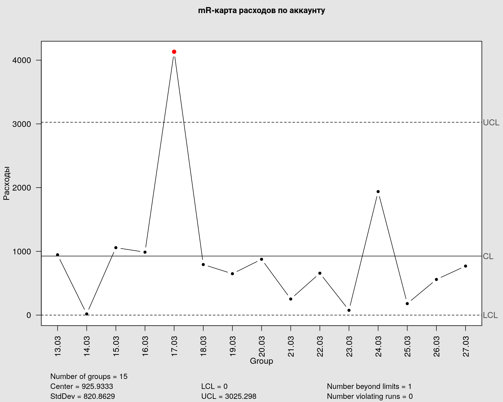

Код: библиотеки
# библиотеки используемые в статье для создания графиков, таблиц и обработки данных.
library(qcc)
library(dplyr)
library(ggplot2)
library(gt)
library(tsibble)
library(imputeTS)Методика применения контрольных карт Шухарта
# библиотеки используемые в статье для создания графиков, таблиц и обработки данных.
library(qcc)
library(dplyr)
library(ggplot2)
library(gt)
library(tsibble)
library(imputeTS)Запустив рекламные кампании, неизбежно наступает момент анализа эффективности. И вот специалист создает отчет, как на графиках ниже. И что он видит?
# подготовка таблицы
acc_df <- df |>
reframe(
across(where(is.numeric), sum),
.by = c(Date)
) |>
mutate(
Cost = round(Cost),
CPA = if_else(Goals == 0 , 0, round(Cost / Goals)),
CPC = if_else(Cost == 0, 0, round(Cost / Clicks)),
CTR = if_else(Clicks == 0, 0, round(Clicks / Impressions * 100, 1)),
CR = if_else(Goals == 0, 0, round(Goals / Clicks * 100, 1)),
SR = if_else(Clicks == 0, 0, round(Sessions / Clicks, 1)),
BR = if_else(Bounces == 0, 0, round(Bounces / Sessions * 100, 1))
)
# строим график
acc_plot <- ggplot(
acc_df,
aes(
x = Date ,
y = Sessions
)) +
geom_col(fill = '#ff79c6') +
scale_x_date(
date_breaks = "2 day",
date_labels = "%d.%m"
) +
theme_minimal() +
labs(
title = "Визиты",
subtitle = "Источник: Директ",
x = NULL,
y = "Визиты",
fill = NULL
) +
theme(
plot.title = element_text(size = 12, color = "gray40"),
plot.subtitle = element_text(size = 12, color = "gray50"),
axis.title = element_text(size = 10, color = "gray50"),
axis.text = element_text(size = 8, color = "gray50"),
axis.text.x = element_text(angle = 90),
panel.grid = element_blank(),
legend.position = "top",
legend.justification = "left",
legend.box.spacing = unit(0.1, "cm"),
legend.text = element_text(size = 8, color = "gray50"),
legend.title = element_text(size = 10, color = "gray50"),
plot.margin = ggplot2::margin(
t = 0.3,
r = 0.3,
b = 0.3,
l = 0.3,
"cm"
)
)
# создаем интерактивный график
plotly::ggplotly(acc_plot)Или вот такой график.
# подготовка таблицы
camp <- df |>
reframe(
across(where(is.numeric), sum),
.by = c(Date, CampaignId)
) |>
filter(Date >='2024-03-01')
# проверяем на пропущенные дни и заполняем NA
camp <- camp |>
as_tsibble(index = Date, key = CampaignId) |>
fill_gaps()
# строим график
camp_plot <- ggplot(
camp,
aes(
x = Date ,
y = Clicks,
group = CampaignId,
color = CampaignId)
) +
geom_point() +
geom_line() +
geom_text(
aes(label = round(Clicks)),
check_overlap = TRUE,
vjust = -1,
size = 2.5,
color = "grey50"
) +
scale_x_date(
date_breaks = "1 day",
date_labels = "%d.%m"
) +
theme_minimal() +
labs(
title = "Переходы",
subtitle = "Источник: Директ",
x = NULL,
y = "Клики",
color = "ID"
) +
theme(
plot.title = element_text(size = 12, color = "gray40"),
plot.subtitle = element_text(size = 12, color = "gray50"),
axis.title = element_text(size = 10, color = "gray50"),
axis.text = element_text(size = 8, color = "gray50"),
axis.text.x = element_text(angle = 90),
panel.grid.minor = element_blank(),
panel.grid.major.y = element_blank(),
panel.background = element_rect(fill = "#f9fbfd", colour = "white"),
legend.position = "top",
legend.justification = "left",
legend.box.spacing = unit(0.1, "cm"),
legend.text = element_text(size = 8, color = "gray50"),
legend.title = element_text(size = 10, color = "gray50"),
plot.margin = ggplot2::margin(
t = 0.3,
r = 0.3,
b = 0.3,
l = 0.3,
"cm"
)
)
camp_plot
Прекрасные графики показывают нам нежно-розовые столбики и цветные линии в динамике. Но очень быстро приходит вопрос: «И что?». А и вправду! Что нам делать с этой информацией?
Эта динамика хороша или плоха? Мне стоит переживать, что столбик от 15.02 выше, чем от 14.02, или, может, даже от 10.01!? Какие решения я должен принять, изучив этот график?
Тогда, может, таблица в помощь?
acc_gt_tbl <- acc_df |>
slice(1:10) |>
gt(rowname_col = "Date") |>
tab_header(
title = "Метрики по аккаунту",
subtitle = "Источник данных: Директ"
) |>
data_color(
columns = Goals,
fn = \(v) lapply(v, \(x) if (x < 1) "darkred" else if (x > 2) "darkgreen" else "black"),
apply_to = "text"
) |>
data_color(
columns = Cost,
fn = \(v) lapply(v, \(x) if (x < 1000) "darkgreen" else if (x > 1000) "darkred" else "black"),
apply_to = "text"
) |>
fmt_currency(
columns = c(Cost, CPA, CPC),
currency = "RUB",
decimals = 0,
placement = "right",
sep_mark = " "
)
acc_gt_tbl| Метрики по аккаунту | ||||||||||||
|---|---|---|---|---|---|---|---|---|---|---|---|---|
| Источник данных: Директ | ||||||||||||
| Cost | Impressions | Clicks | Sessions | Bounces | Goals | CPA | CPC | CTR | CR | SR | BR | |
| 2024-01-09 | 1 320₽ | 10689 | 69 | 75 | 24 | 0 | 0₽ | 19₽ | 0.6 | 0.0 | 1.1 | 32.0 |
| 2024-01-10 | 3 490₽ | 9714 | 154 | 148 | 40 | 3 | 1 163₽ | 23₽ | 1.6 | 1.9 | 1.0 | 27.0 |
| 2024-01-11 | 3 273₽ | 6185 | 114 | 108 | 17 | 3 | 1 091₽ | 29₽ | 1.8 | 2.6 | 0.9 | 15.7 |
| 2024-01-12 | 2 242₽ | 3507 | 91 | 82 | 12 | 1 | 2 242₽ | 25₽ | 2.6 | 1.1 | 0.9 | 14.6 |
| 2024-01-13 | 376₽ | 1456 | 32 | 31 | 4 | 1 | 376₽ | 12₽ | 2.2 | 3.1 | 1.0 | 12.9 |
| 2024-01-14 | 169₽ | 1079 | 18 | 15 | 3 | 0 | 0₽ | 9₽ | 1.7 | 0.0 | 0.8 | 20.0 |
| 2024-01-15 | 3 517₽ | 4234 | 141 | 144 | 22 | 3 | 1 172₽ | 25₽ | 3.3 | 2.1 | 1.0 | 15.3 |
| 2024-01-16 | 3 498₽ | 5132 | 181 | 184 | 37 | 3 | 1 166₽ | 19₽ | 3.5 | 1.7 | 1.0 | 20.1 |
| 2024-01-17 | 2 908₽ | 3651 | 170 | 170 | 29 | 4 | 727₽ | 17₽ | 4.7 | 2.4 | 1.0 | 17.1 |
| 2024-01-18 | 528₽ | 4113 | 43 | 45 | 9 | 0 | 0₽ | 12₽ | 1.0 | 0.0 | 1.0 | 20.0 |
Эффективна наша система по привлечению трафика?
Но у нас же есть KPI! Да, наверняка у нас есть KPI и даже план, сверстанный в красивую презентацию. Но будем честны. При запуске кампаний наши KPI берутся из каких-то примерных показателей в нише. Я бы даже сказал, очень примерных. Это, безусловно, лучше, чем ничего, но, как правило, итоговые KPI отличаются значительно.
Чтобы понять границы истинных KPI, насколько эффективно работают кампании и когда нужно принимать решения, применим силу контрольных карт Шухарта.
Вопрос к размышлению: а, собственно, зачем вообще знать KPI? Какой в этом смысл?
Контрольные карты Шухарта (метод шести сигм) — статистический метод, который позволяет усовершенствовать процессы в компании. В основе метода лежит предположение, что любые динамически меняющиеся во времени показатели могут быть разделены на 2 группы: системные и частные.
Предполагается, что если значение показателя трактуется как неудовлетворительное, то необходимо определиться с корректными методами его исправления, принимая во внимание тот факт, что системные проблемы должны корректироваться системными методами, а частные — частными.
Кроме того, метод используется для оценки повышения / снижения качества управления, предлагая конкретные индикативные показатели, отражающие нарастающую или снижающуюся вариативность процесса (вариативность в концепции рассматривается как главный «враг» эффективности).
Главная задача — научиться различать состояния, в которых находится система, а затем решать, что и кому надо с ней делать (или не делать). ККШ — это и есть диагностический инструмент для ответа на вопрос: надо или не надо вмешиваться в систему, и если надо, то кому?
Контрольные карты Шухарта приняты и введены в действие Постановлением Госстандарта России от 15 апреля 1999 г. N 127
Контрольные карты применяются в сферах производства и услуг. В нашем случае, мы будем использовать карты для улучшения показателей в рекламных кампаниях.
Глобально, ККШ могут быть применены для улучшения любых показателей в бизнесе, которые зависят от временного ряда. Анализируются различные источники трафика с группировкой данных до нужного уровня, например, типа устройства, кампаний, объявлений, таргетинга или с группировкой по конкретной посадочной странице на сайте.
Таким образом, специалист по трафику применяет карты:
Ниже я покажу примеры трех основных типов контрольных карт. Расскажу условия применения и какие выводы можно сделать на основании полученных данных.
Возможно четыре состояния, в которых находится любой производственный процесс.
Энтропия постоянно воздействует на все процессы, вызывая ухудшение качества, разрушение, износ и разрывы, аварии и отказы. Т. е. если не управлять системами привлечения трафика, они в любом случае затухнут, просто потому, что так работают законы Вселенной ;)
Критерии роста системы
Шухарт и Деминг выделили два критерия, которые должны указывать на то, что кампания активно растет:
Критерии ухудшения системы
Ещё правила для обнаружения «вышедших из-под контроля» или неслучайных условий:
Рассмотрим три основных типа ККШ и способы их создания.
\(XmR\)-карты — карты индивидуальных значений и размахов. Данный тип карт применяется, когда нет возможности сгруппировать данные. Эти карты менее точны, чем карты средних значений (\(\bar{X}R\)-карты), однако они полезны при старте рекламных кампаний или при планируемых значительных изменениях, которые могут повлиять на границы системы.
Как видно из названия, карт применяются два их типа:
карта индивидуальных значений (\(X\)-карта). Строится карта в декартовой системе координат, где по оси абсцисс расположены даты, а на оси ординат — значения исследуемой метрики.
карта размахов (\(mR\)-карта). Размах — это разность между наибольшим и наименьшим значениями. Размах практически не отражает «срединных» значений, поэтому он неэффективен для описания больших массивов данных и используется для описания множеств, число элементов которых не превосходит 15.
Рассмотрим пример \(mR\)-карты расходов по всему аккаунту за 15 дней.
# подготовка таблицы
acc_date <- df |>
reframe(
across(where(is.numeric), sum),
.by = Date
) |>
mutate(Cost = round(Cost))
# набор данных для mR-карты
mr_cost <- acc_date |>
filter(Date >= '2024-03-13') |>
mutate(Lead = lead(Cost)) |>
select(Cost, Lead) |>
filter(!is.na(Lead)) |>
as.matrix()
# создаем значения для оси абсцисс
temp <- acc_date |>
filter(Date >= '2024-03-13') |>
mutate(lab = clock::date_format(Date, format = "%d.%m")) |>
select(lab)
df_lab <- temp[1:(nrow(temp) - 1), ] |>
as.matrix()
# данные для mR-карты
mr_cost_plot <- qcc(
type = "R",
data = mr_cost,
labels = df_lab,
plot = FALSE
)
# создаём mR-картy
plot.qcc(
mr_cost_plot,
axes.las = 2,
title = "mR-карта расходов по аккаунту",
ylab = "Расходы"
)
На графике видим, что 17.03 наблюдается перерасход средств по аккаунту. Были внесены какие-то действия, которые привели к выходу за границы системных значений. Действительно, в этот день были выставлены новые недельные расходы.
Рассмотрим \(X\)-карту индивидуальных значений за весь анализируемый период.
# данные для х-карты
x_cost <- qcc(
type = "xbar.one",
data = acc_date$Cost[1:27],
newdata = acc_date$Cost[28:nrow(acc_date)],
labels = acc_date$Date[1:27] |> format("%d.%m"),
newlabels = acc_date$Date[28:nrow(acc_date)] |> format("%d.%m"),
plot = FALSE
)
# проверяем нижнюю границу
x_cost$limits[1] <- if_else(x_cost$limits[1] < 0, 0, x_cost$limits[1])
# строим график
plot(
x_cost,
axes.las = 2,
title = "Х-карта \n Период 1: с 09.01. Период 2: с 12.02",
ylab = "Расход",
restore.par = T
)
В первую очередь обратим внимание на границы. Нижний порог контрольной границы (\(LCL\)) равен \(0\), а верхний — \(≈4337\). На самом деле, нижний порог имеет значение \(-1093\). Но мы не можем потратить минус тысячу рублей, поэтому значение нижней границы приравниваем к нулю.
Стоит отметить, что из-за большего временного периода границы на графике стали шире по сравнению с \(mR\)-картой, но для обзора данных нас это устраивает.
На графике красными точками зафиксированы выходы за верхние границы расходов. 05.02 был проведен тестовый запуск на новый регион, что и зафиксировали алгоритмы. Далее с помощью карт анализируются метрики по достижению целей, переходов, расходов, \(CTR\), \(CR\) и другие в различных срезах. Например, на графике ниже видны данные по расходам в разрезе двух объявлений выбранной группы.
ads_df <- df |>
reframe(
across(where(is.numeric), sum),
.by = c(Date, CampaignId, AdGroupId, AdId)
) |>
filter(CampaignId %in% "107880029",
AdGroupId %in% "5409189158")
# график: столбчатый график с накоплением
ads_df_plot <- ggplot(
ads_df,
aes(
x = Date ,
y = Cost,
group = AdId,
fill = AdId
)) +
geom_col() +
scale_x_date(
date_breaks = "1 day",
date_labels = "%d.%m"
) +
theme_minimal() +
labs(
title = "Расходы",
subtitle = "Директ",
x = NULL,
y = "Расходы, ₽",
fill = NULL
) +
theme(
plot.title = element_text(size = 12, color = "gray40"),
plot.subtitle = element_text(size = 12, color = "gray50"),
axis.title = element_text(size = 10, color = "gray50"),
axis.text = element_text(size = 8, color = "gray50"),
axis.text.x = element_text(angle = 90),
panel.grid = element_blank(),
legend.text = element_text(size = 8, color = "gray50"),
legend.title = element_text(size = 10, color = "gray50"),
plot.margin = ggplot2::margin(
t = 0.2,
r = 0.2,
b = 0.2,
l = 0.2,
"cm"
)
)
# создаем интерактивный график
plotly::ggplotly(ads_df_plot,tooltip = c("x","y","group"))Рассмотрим \(R\)-карту размахов по кликам «красного» объявления.
# набор данных для mR-карты
mr_df <- ads_df |>
filter(AdId %in% '15883344950') |>
mutate(Lead = lead(Clicks)) |>
select(Clicks, Lead) |>
filter(!is.na(Lead)) |>
as.matrix()
# создаем значения для оси абсцисс
temp <- ads_df |>
filter(AdId %in% '15883344950') |>
mutate(lab = clock::date_format(Date, format = "%d.%m")) |>
select(lab)
lab_df <- temp[1:(nrow(temp) - 1), ] |>
as.matrix()
# данные для mR-карты
mr_plot <- qcc(
type = "R",
data = mr_df,
labels = lab_df,
plot = FALSE
)
# создаём mR-картy
plot.qcc(
mr_plot,
axes.las = 2,
title = "mR-карта",
ylab = "Клики"
)
Обнаружены два выхода за контрольные границы. Фиксируем разницу в кликах между 27 и 28 датами в феврале и между 24 и 25 в марте. Знаем из графика выше, что в эти дни был меньший расход на объявления по сравнению со следующим днём.
Создадим \(X\)-карту.
ads_qcc <- ads_df |>
filter(AdId %in% '15883344950')
# данные для х-карты
x_df <- qcc(
type = "xbar.one",
data = ads_qcc$Clicks,
labels = ads_qcc$Date |> format("%d.%m"),
plot = FALSE
)
# устанавливаем предупреждающие границы
sg1 <- limits.xbar.one(x_df$center, x_df$std.dev, x_df$sizes, 1)
sg2 <- limits.xbar.one(x_df$center, x_df$std.dev, x_df$sizes, 2)
# корректировка нижней границы LCL
x_df$limits[1] <- if_else(x_df$limits[1] < 0, 0, x_df$limits[1])
# строим график
plot(
x_df,
axes.las = 2,
title = "Х-карта",
ylab = "Клики",
restore.par = FALSE
)
# добавляем предупреждающие границы
abline(h = sg1, lty = 3, col = "gray")
abline(h = sg2, lty = 3, col = "gray")
Видим, что на графике индивидуальных значений нет выхода за границы. Это означает, что система фиксирует на карте размахов дни, когда алгоритмы показа объявлений начинают корректировку показов объявлений, но на общую картину это не влияет, и количество кликов не выходит за границы, т. е. тут видна работа системы, а не работа специалиста.
Ниже текст из ГОСТ.
«Данный тип карт используется для анализа альтернативных данных. Альтернативные данные представляют собой наблюдения, фиксирующие наличие или отсутствие некоторых характеристик (или признаков) у каждой единицы рассматриваемой подгруппы. На основе этих данных производится подсчет числа единиц, обладающих или не обладающих данным признаком, или число таких событий в единице продукции, группе или области. … U-карты основаны на распределении Пуассона.»
Кстати, вы знаете, как рассчитать бюджет для рекламной кампании с помощью распределения Пуассона? Об этом, пожалуй, напишу в следующей статье.
Данные карты используются для выявления брака на единицу продукции или на выборку из продукции. В нашем случае в роли выборки выступает метрика показов или кликов сгруппированная по дням, месяцам или иным подгруппам, а кол-во «брака» в нашем случаи это кол-во кликов или достигнутых целей. На картах отображаются отношения кликов к показам (CTR) или целей к кликам (CR) в абсолютных единицах.
Анализировать «ситиар» по всему аккаунту дело не благодарное и исключительно тревожное. Данная метрика сильно зависит от типов рекламных кампаний используемых в аккаунте.
Например, в аккаунте может быть одна РК на поиске, а вторая в РСЯ, тогда средний «ситиар» нам в целом ни о чем не скажет. Потому что «ситиар» на поиске сильно выше чем в РСЯ.
Более того, если РК в РСЯ переодически отключается, то мы будем создавать эффект «низкой базы» из-за чего наш график будет «болеть» корью (множество красных точек — сигнал выходы за границы «разумного»).
Пример данных по аккаунту.
# подготовка таблицы
ctr_u <- df |>
reframe(
across(c(Impressions, Clicks), sum),
.by = Date
)
# данные для u-карты
ctr_u_plot <- qcc(
type = "u",
data = ctr_u[[3]],
sizes = ctr_u[[2]],
labels = ctr_u$Date |> format("%d.%m"),
plot = FALSE
)
# строим график
plot.qcc(
ctr_u_plot,
axes.las = 2,
title = "U-карта коэф. кликов (CTR) \n в абсолютных значениях",
ylab = "CTR"
)
График «заболел». Анализировать такие данные не имеет смысла. Необходимо разделить данные по типу рекламных кампаний.
Рассмотрим \(u\)-карту CTR на примере поискового трафика.
# подготовка таблицы
u_card <- df |>
reframe(
across(c(Impressions, Clicks), sum),
.by = c(Date, AdNetworkType)
)
# фильтруем данные
ctr_u <- u_card |>
filter(AdNetworkType %in% 'SEARCH',
Date>="2024-03-01") |>
select(Date, Impressions, Clicks)
# данные для u-карты
ctr_u_plot <- qcc(
type = "u",
data = ctr_u[[3]],
sizes = ctr_u[[2]],
labels = ctr_u$Date |> format("%d.%m"),
plot = FALSE
)
# строим график
plot.qcc(
ctr_u_plot,
axes.las = 2,
title = "U-карта коэф. кликов (CTR) \n в абсолютных значениях",
ylab = "CTR"
)
Особенность данной карты в том, что у неё плавающие границы. Как именно они рассчитываются, описано в ГОСТе.
Карта хорошо помогает в работе с объявлениями. Вносим изменение в объявление и наблюдаем, как сильно это повлияло на заметность объявления в поиске или в рекламных сетях Яндекса.
Также данный тип карты можно применять при работе над повышением конверсии на посадочных страницах.
Ниже текст из ГОСТ.
«Карты запускаются вместе с процессом и дают независимую картину того, на что процесс способен. После этого характеристики процесса можно сравнивать или нет с установленными требованиями.
Карты для количественных данных отражают состояние процесса через разброс (изменчивость от единицы к единице) и через расположение центра (среднее процесса). Поэтому контрольные карты для количественных данных почти всегда применяют и анализируют парами — одна карта для расположения и одна — для разброса.»
Ключевое:
карты дают независимую картину того, на что процесс способен. Т. е. мы точно знаем мощность источника трафика и сможем установить контрольные KPI.
контрольные карты используются парами. Одна карта — расположение средних значений в декартовой системе координат, и одна для разброса.
Приведу пример анализа целей по всему аккаунту.
Сначала рассмотрим данные по достижению целей на столбчатом графике для лучшего понимания происходящего на контрольных картах.
goal_df <- df |>
filter(AdNetworkType %in% 'SEARCH') |>
mutate(Week = clock::date_format(Date, format = "%W")) |>
reframe(
across(c(Goals), sum),
.by = c(Week)
)
goal_plot <- ggplot(
goal_df,
aes(
x = Week ,
y = Goals
)) +
geom_col(fill = '#ff79c6') +
theme_minimal() +
labs(
title = "Цели на поиске сгруппированные по неделям",
subtitle = "Источник: Директ",
x = "Неделя",
y = "Кол-во целей",
fill = "Номер недели"
) +
theme(
plot.title = element_text(size = 12, color = "gray40"),
plot.subtitle = element_text(size = 12, color = "gray50"),
axis.title = element_text(size = 10, color = "gray50"),
axis.text = element_text(size = 8, color = "gray50"),
axis.text.x = element_text(angle = 90),
panel.grid = element_blank(),
legend.position = "top",
legend.justification = "left",
legend.box.spacing = unit(0.1, "cm"),
legend.text = element_text(size = 8, color = "gray50"),
legend.title = element_text(size = 10, color = "gray50"),
plot.margin = ggplot2::margin(
t = 0.3,
r = 0.3,
b = 0.3,
l = 0.3,
"cm"
)
)
# создаем интерактивный график
plotly::ggplotly(goal_plot)Создаем карту размахов средних значений по неделям.
# создадим набор данных и дополним пропущенные дни значением по алгоритму Калмана
xr_card <- df |>
reframe(
across(c(Goals), sum),
.by = c(Date, AdNetworkType)
) |>
filter(AdNetworkType %in% 'SEARCH') |>
as_tsibble(
index = Date,
key = AdNetworkType
) |>
fill_gaps(
.start = as.Date('2024-01-08'),
.end = as.Date('2024-03-31')
) |>
imputeTS::na_kalman() |>
mutate(
Goals = round(Goals),
Week = clock::date_format(Date, format = "%W")
)
# группируем данные для графика
xr_card_gr <- with(xr_card, qcc.groups(Goals , Week))
# данные для создания графика
xr_card_plt <- qcc(
type = "R",
data = xr_card_gr[1:4,],
newdata = xr_card_gr[4:nrow(xr_card_gr),],
plot = FALSE
)
# установка предупредждающих границ
sg1 <- limits.xbar(xr_card_plt$center, xr_card_plt$std.dev, xr_card_plt$sizes, 1)
sg2 <- limits.xbar(xr_card_plt$center, xr_card_plt$std.dev, xr_card_plt$sizes, 2)
# корректировка нижней границы LCL
xr_card_plt$limits[1] <- if_else(xr_card_plt$limits[1] < 0, 0, xr_card_plt$limits[1])
# строим график
plot.qcc(
xr_card_plt,
title = "Процесс находится под стат контролем \n Выходы за границы не обнаружены",
ylab = "Цель",
xlab = "Неделя",
restore.par = FALSE
)
Что видно на графике?
ГОСТ
\(R\)-карта выявляет любую нежелательную вариацию внутри подгрупп и служит индикатором изменчивости исследуемого процесса. Это мера состоятельности и однородности процесса. Если \(R\)-карта показывает, что вариации внутри подгрупп не изменяются, то это значит, что процесс остается в статистически управляемом состоянии.
В данном случае трафик из Директа находится в статистически управляемом процессе. Выходы за границы не обнаружены. Т. е. внутри подгрупп (неделя) вариации по достижению целей остаются под контролем.
Создаем карту средних значений, сгруппированных по неделям.
# данные для создания графика
xr_card_plt <- qcc(
type = "xbar",
data = xr_card_gr[1:4,],
newdata = xr_card_gr[4:nrow(xr_card_gr),],
plot = FALSE
)
# установка предупредждающих границ
sg1 <- limits.xbar(xr_card_plt$center, xr_card_plt$std.dev, xr_card_plt$sizes, 1)
sg2 <- limits.xbar(xr_card_plt$center, xr_card_plt$std.dev, xr_card_plt$sizes, 2)
# корректировка нижней границы LCL
xr_card_plt$limits[1] <- if_else(xr_card_plt$limits[1] < 0, 0, xr_card_plt$limits[1])
# строим график
plot.qcc(
xr_card_plt,
title = "Обнаружен выход за границы на 7 неделе работы РК",
xlab = "Неделя",
ylab = "Среднее в неделе",
restore.par = FALSE
)
# добавляем предупреждающие границы
abline(h = sg1, lty = 3, col = "gray")
abline(h = sg2, lty = 3, col = "gray")
Что мы видим на графике?
Из ГОСТа.
\(X\)-карта показывает, где находится среднее процесса и какова его стабильность. Та же карта выявляет нежелательные вариации между подгруппами и вариации относительно их среднего.
Интерпретация может быть не совсем очевидной.
Во-первых, на шкале ординат мы видим не суммарные значения по неделям, а среднее значение достигнутых целей внутри недели (по-другому, среднее значение в день). Т. е. мы сложили за неделю все цели и разделили на \(7\). Если сгруппировать данные по месяцам, то получим среднее значение в неделю и так далее. По шкале абсцисс — номер недели 2024 года.
Во-вторых, границы нашей системы по привлечению обращений в кампанию составляют от \(0\) до \(2–3\) обращений в день. При этом стоит отметить, что в данном случае, если более шести дней подряд кол-во конверсий не меняется (нет обращений или по \(1–2\) в день), то переживать, срочно бежать и что-то делать не надо.
На рынке есть множество ниш со сложными продуктами, где может быть маленький спрос или сложный продукт. В таких нишах, если до шести дней не будет обращений в компанию, то это нормальное явление. Нужно понимать границы системы и в какой нише работаете и корректировать ожидания от рекламных активностей. Плюс не забываем о моделях атрибуции в рекламных системах. Например, я часто сталкиваюсь с тем, что конверсии досчитываются в промежутки до 21 дня.
Разберемся, что показывает график. На седьмой неделе работы рекламной кампании зафиксирован выход за границу по среднему значению между группами. Исходя из столбчатого графика выше, в этот день было больше всего конверсий за весь анализируемый период, что привело к повышенному среднему значению среди всех остальных групп. Рассмотрим табличные данные в этот период.
goal_tbl <- df |>
filter(AdNetworkType %in% 'SEARCH') |>
mutate(Week = clock::date_format(Date, format = "%W")) |>
reframe(
across(c(Goals), sum),
.by = c(Date, Week)
) |>
filter(Date >="2024-02-05" & Date <= "2024-02-25")
gt(goal_tbl, rowname_col = "Date") |>
tab_header(
title = "Данные по целям",
subtitle = "Источник данных: Директ"
) |>
data_color(
columns = Week,
rows = Week == "07",
method = "auto",
palette = "red",
apply_to = "text"
) |>
tab_row_group(
label = "Шестая неделя",
rows = 1:7
) |>
tab_row_group(
label = "Седьмая неделя",
rows = 8:12
) |>
tab_row_group(
label = "Восьмая неделя",
rows = 13:19
) |>
tab_options(table.font.size = "small") |>
cols_label(
Goals = "Цель",
Week = "Неделя"
) |>
tab_options(
table.width = px(250)
)| Данные по целям | ||
|---|---|---|
| Источник данных: Директ | ||
| Неделя | Цель | |
| Восьмая неделя | ||
| 2024-02-19 | 08 | 0 |
| 2024-02-20 | 08 | 0 |
| 2024-02-21 | 08 | 3 |
| 2024-02-22 | 08 | 3 |
| 2024-02-23 | 08 | 0 |
| 2024-02-24 | 08 | 0 |
| 2024-02-25 | 08 | 0 |
| Седьмая неделя | ||
| 2024-02-12 | 07 | 3 |
| 2024-02-13 | 07 | 3 |
| 2024-02-14 | 07 | 4 |
| 2024-02-15 | 07 | 4 |
| 2024-02-16 | 07 | 1 |
| Шестая неделя | ||
| 2024-02-05 | 06 | 1 |
| 2024-02-06 | 06 | 0 |
| 2024-02-07 | 06 | 1 |
| 2024-02-08 | 06 | 3 |
| 2024-02-09 | 06 | 1 |
| 2024-02-10 | 06 | 4 |
| 2024-02-11 | 06 | 1 |
Как видно из таблицы, по сравнению с предыдущей и следующей неделями на седьмой неделе распределение целей и их кол-во отличаются. Остается выяснить, в каких кампаниях, группах, объявлениях что послужило причиной таких аномалий, и рассматриваем возможность масштабирования.
Конкретно в нашем случаи были запущены новые тестовые кампании, что повлияло на кол-во целей, но далее РК не запускались.
Итак, мы выяснили, что существует три основных типа контрольные карты:
и в зависимости от ситуации применяется подходящая для случая.
Поняли, как узнать мощность нашей рекламной системы по анализируемой KPI и когда нужно реагировать на текущие процессы.
Узнали, что истинные значения KPI нам нужны для улучшения процессов. Вопрос лишь в том, какие усилия нам нужно приложить для получения желаемого результата. Об этом чуть-чуть подробнее.
Зная системные значения KPI, мы можем корректно ставить задачи ответственным за привлечение клиентов в компанию. Разберем пример.
В первую очередь выясним, что влияет на кол-во обращений в компанию.
Формула получения обращений (лидов) в компанию:
\[Leads = Impressions × CTR × CR\]
\(Impressions\) — показы объявлений на площадках системы привлечения трафика. Данный параметр рассчитывается как произведение \(GRP×Fq\), т. е. охват (кол-во уникальных браузеров) на кол-во показов объявлений одному пользователю (браузеру). Специалист влияет на данный параметр:
При этом бюджет является ключевым, так как сильно влияет на охват. Например, если бюджета не хватает, то объявления будут показываться на последних местах или в самом низу страниц, из-за чего охват по таргету сильно снижается.
\(CTR\) — коэффициент конверсии из охваченных браузеров в перешедших на сайт. На этот параметр влияет: кол-во конкурентов в отрасли, тип площадки, формат объявления и его качество. Специалист влияет на данный параметр:
\(СR\)— коэффициент конверсии из перешедших в обратившихся в компанию. На данный параметр сильно влияют: кол-во конкурентов в отрасли, тип услуги или продукта, цена на товар или услугу, наличие товара, качество контента и посадочных страниц и так далее. Специалист влияет на данный параметр:
Допустим, мы хотим прирасти на 15% по кол-ву обращений в каждый месяц. Как нам это сделать? Построим таблицу, где мы воздействуем на параметры: показы, CTR, CR с усилием по 15% на каждый параметр. Произведем расчеты, основываясь на средних значениях за последние три месяца.
| 52% ежемесячный прирост по лидам | ||||
|---|---|---|---|---|
| Дополнительно получим 22 обращения в месяц | ||||
| Impressions | CTR | CR | Leads | |
| Среднее | 17000 | 9.6% | 2.6% | 42 |
| Прогноз | 19550 | 11.04% | 2.99% | 65 |
| Дельта | 2550 | 1.44% | 0.39% | 22 |
В итоге, если мы будем воздействовать на каждый параметр с усилием в \(15\%\), то общий прирост по лидам составит \(52\%\) (\(1.15×1.15×1.15\)), что составит плюс \(22\) конверсии в месяц дополнительно!
Однако нужно понять степень приложения усилия на каждый параметр для прироста. Поэтому дальнейшие размышления должны происходить в ключе: а можем ли мы поднять текущий CR на \(0,39\%\)? Не уперлись ли мы в потолок? Поднять CR с \(1\%\) до \(2–3\%\) достаточно просто, но вот поднять с \(5\%\) до \(6\%\) уже намного сложнее и требует больше усилий. Как с достижением скорости света: чем ближе к пределу, тем больше энергии нужно потратить.
На этом всё! Сиди, думай и действуй.